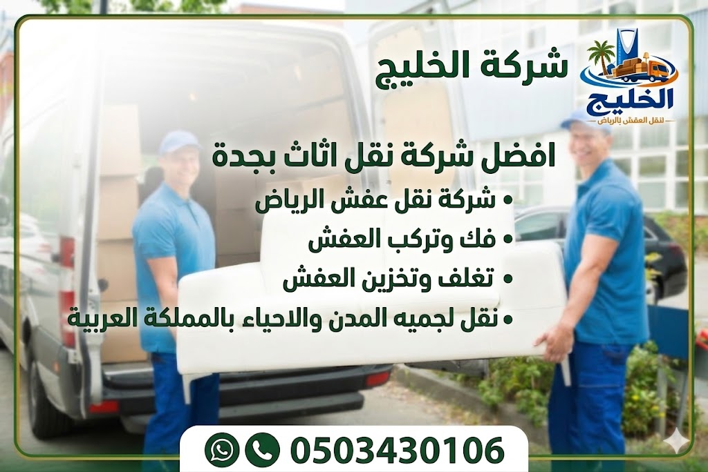
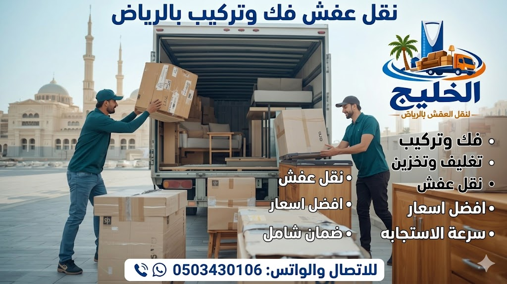

1. شركة نقل عفش الرياض بخدمات احترافية متكاملة

شركة نقل عفش الرياض المتميزة هي شركة الخليج لنقل العفش والمكيفات. نقدم خدمات شاملة تشمل نقل الأثاث، ترحيل العفش، شحن الأثاث، ونقل الموبيليا داخل وخارج الرياض. نحن ندرك أن نقل العفش الرياض يحتاج إلى دقة واحترافية، لذلك نستخدم أحدث سيارات النقل المجهزة بأنظمة تعليق هوائي وأحزمة تثبيت. فريقنا من عمال نقل عفش بالرياض مدرب على أعلى مستوى لضمان سلامة كل قطعة. إذا كنت تبحث عن أفضل شركة نقل عفش بالرياض بأسعار تنافسية، فإن شركتنا توفر لك معاينة مجانية وعرض سعر فوري. كما نقدم دينا نقل عفش بالرياض للطلبات السريعة وونش رفع عفش بالرياض للأدوار العالية. نحن نخدم جميع أحياء الرياض ونضمن لك نقل آمن مع ضمان ضد الكسر. يمكنك زيارة صفحة نقل العفش بالرياض لمعرفة المزيد عن خدماتنا. اتصل بنا اليوم لتحصل على أفضل خدمة شركة نقل اثاث بالرياض بخبرة تزيد عن 10 سنوات.
نحن في شركة نقل عفش الرياض نحرص على تقديم نقل عفش مع الفك والتركيب بالرياض ونقل عفش مع التغليف بالرياض لتوفير الجهد على عملائنا. خدماتنا تشمل أيضاً تخزين اثاث بالرياض في مستودعات مجهزة. لقد أكملنا آلاف عمليات النقل بنجاح، وحصلنا على ثقة العملاء. اختر الأفضل، اختر الخليج لنقل العفش.
2. لماذا تعد شركتنا من أفضل شركات نقل العفش بالرياض؟
تتميز شركة نقل عفش الرياض (الخليج) عن غيرها من شركات نقل العفش بالرياض بعدة عوامل: الخبرة الطويلة، العمالة المدربة، الأسعار الشفافة، واستخدام أفضل مواد تغليف الأثاث. نحن نقدم نقل الأثاث بأحدث سيارات النقل المجهزة والمزودة بنظام تعليق لامتصاص الصدمات. بالإضافة إلى ذلك، نوفر حماية الأثاث أثناء النقل باستخدام البطاطين والفوم والكرتون المقوى. معظم الشركات الأخرى تهمل التغليف أو تكتفي بغطاء بسيط، بينما نحن نغلف كل قطعة على حدة. نحن أفضل شركة نقل عفش بالرياض من حيث التقييمات والالتزام بالمواعيد. لقراءة مقارنة شاملة، زر أفضل شركة نقل عفش بالرياض من حيث الجودة. خدماتنا تشمل نقل موبيليا بالرياض وشحن الأثاث إلى خارج المدينة.
نحن نتميز أيضاً بتقديم ونش رفع عفش بالرياض للأثاث الثقيل، ودينا نقل عفش بالرياض للنقل السريع، وتخزين الأثاث بالرياض لفترات قصيرة وطويلة. كل هذه الخدمات تجعلنا الخيار الأول للعملاء الذين يبحثون عن شركة نقل عفش الرياض موثوقة.
3. أفضل شركة نقل عفش بالرياض بأسعار مناسبة
البحث عن أفضل شركة نقل عفش بالرياض بأسعار تنافسية يقودك إلينا. نحن نقدم أسعاراً تبدأ من 300 ريال للشقة الصغيرة، مع عروض وخصومات تصل إلى 20% عند حجز الخدمة الكاملة. سعر نقل عفش الرياض يعتمد على عدد الغرف والمسافة ووجود مصعد. مثلاً، نقل عفش شقق بالرياض بتكلفة تتراوح بين 500 و 1500 ريال، بينما نقل عفش فلل بالرياض يتراوح بين 2000 و 4000 ريال. نحن نضمن أن تكون أسعارنا أقل من المتوسط في السوق مع جودة أعلى. يمكنك الحصول على عرض سعر دقيق من خلال صفحة أفضل شركة نقل عفش بالرياض أو الاتصال بنا. نوفر أيضاً شحن الأثاث بأسعار مميزة للمسافات البعيدة.
نحن نؤمن بأن شركة نقل عفش بالرياض الجيدة لا تعني غلاء السعر. لذلك نقدم تقسيطاً مرنًا وعروضاً للشركات والمؤسسات. اتصل بنا للمعاينة المجانية وسنقدم لك سعراً لن تجده في أي مكان آخر.
4. خدمات نقل الأثاث داخل جميع أحياء الرياض
شركة نقل عفش الرياض تقدم خدماتها في كل أحياء العاصمة: شمالاً حي العليا، النرجس، الياسمين؛ شرقاً حي الخليج، الروضة؛ غرباً حي النهضة، الدار البيضاء؛ جنوباً حي الشفا، ظهرة لبن. نحن ندرك أن نقل اثاث داخل الرياض يختلف من حي لآخر بسبب طبيعة الشوارع والمباني. لذلك نخصص فرقاً لكل منطقة لضمان الوصول السريع. على سبيل المثال، نقل عفش شمال الرياض يتم عبر طرق سريعة مثل طريق الملك فهد، بينما نقل عفش شرق الرياض يحتاج إلى عناية أكبر بسبب الازدحام. نحن نغطي جميع الأحياء بدون استثناء. لمعرفة المزيد عن المناطق التي نخدمها، زر خدمات نقل العفش داخل الرياض. فريقنا من عمال نقل عفش بالرياض جاهز للوصول إلى أي حي خلال وقت قياسي.
نحن نقدم أيضاً نقل أثاث آمن داخل جميع أحياء الرياض مع ضمان سلامة الجدران والأرضيات والمصاعد. اختر شركة الخليج وستحصل على خدمة متكاملة في حيك.
5. خدمات فك وتركيب الأثاث بالرياض

فك وتركيب اثاث بالرياض من الخدمات الأساسية التي نقدمها. فريقنا من الفنيين المتخصصين يقوم بفك جميع أنواع الأثاث: غرف النوم، المجالس، المطابخ، الدواليب، والأثاث المكتبي. نستخدم أدوات احترافية لتجنب خدش الأسطح أو تلف المفصلات. بعد النقل، نعيد تركيب الأثاث في موقع جديد بدقة متناهية، مع ضبط المقابض والمفصلات. هذه الخدمة تجعلنا أفضل شركة نقل عفش بالرياض لاحتوائها على فك وتركيب احترافي. يمكنكم زيارة صفحة فك وتركيب الأثاث بالرياض لمعرفة الخطوات بالتفصيل. نتعامل مع جميع الماركات بما فيها ايكيا و ساكو. كما نقدم خدمة فك وتركيب المطابخ والخزائن الضخمة باستخدام الونش إذا لزم الأمر.
نحن نضمن أن عملية فك وتركيب الأثاث تتم بسرعة وكفاءة، ونقوم بتنظيم المسامير والبراغي في أكياس مخصصة لتسهيل التركيب. لا تتردد في الاتصال بنا لحجز خدمة الفك والتركيب.
6. تغليف العفش بالرياض بأحدث مواد الحماية
تغليف عفش بالرياض هو عنصر أساسي في خدماتنا. نستخدم مواد عالية الجودة مثل الفوم الرغوي، البلاستيك الفقاعي، البطاطين السميكة، والكرتون المضلع. نقوم بتغليف كل قطعة أثاث على حدة، مع الاهتمام بالزوايا والأجزاء الزجاجية. تغليف الأثاث يحمي من الخدوش والغبار والرطوبة أثناء النقل. نحن نقدم شركة تغليف ونقل أثاث بالرياض متكاملة، حيث نقوم بالتغليف ثم النقل. يمكنكم الاطلاع على خدمات تغليف العفش في الرياض لمعرفة المزيد عن المواد المستخدمة. فريقنا مدرب على لف الأثاث بطريقة تمنع أي تحرك داخل السيارة.
نحن نستخدم أفضل طرق تغليف الأثاث قبل النقل وفقاً للمعايير العالمية. عند طلب نقل عفش مع التغليف بالرياض، ستحصل على ضمان إضافي ضد الكسر. اتصل بنا الآن لتحجز خدمة التغليف الاحترافية.
7. أفضل طرق تغليف الأثاث قبل النقل
هناك عدة طرق فعالة لـ تغليف الأثاث منها: لف الأسطح الخشبية بغلاف فقاعي، واستخدام أغطية قماشية للأثاث الجلدي، وتغليف المرايا بصناديق خاصة. في شركة نقل عفش الرياض نتبع بروتوكولاً صارماً: أولاً ننظف الأثاث، ثم نلفه بطبقة من الفوم، ثم نضيف طبقة من البلاستيك المقوى، وأخيراً نضع الزوايا الكرتونية. هذه الطريقة تجعل الأثاث محمياً من أي صدمات. للتعرف على التفاصيل الكاملة، زر أفضل طرق تغليف الأثاث قبل النقل. نحن نقدم ورش عمل توعوية لعملائنا حول كيفية التغليف الذاتي لمن يفضل ذلك، لكن ننصح بالاستعانة بخبرائنا.
نحن في الخليج نعتبر أن التغليف الجيد هو نصف عملية النقل. لذلك نخصص مواد عالية التحمل لضمان وصول العفش بحالة ممتازة. اطلب خدمة تغليف العفش بالرياض وتأكد من الفرق.
8. كيفية حماية الأثاث أثناء النقل
حماية الأثاث أثناء النقل تتطلب أكثر من مجرد تغليف. نحن نستخدم سيارات مجهزة بنظام تعليق هوائي وأحزمة تثبيت قوية تمنع تحرك الأثاث داخلها. كما نضع فواصل بين القطع لتجنب الاحتكاك. نحرص على أن يكون التحميل والتنزيل بواسطة عمال مدربين يستخدمون عربات ذات عجلات مطاطية. نصيحة: تأكد من إفراغ الأدراج والخزائن قبل النقل. لقراءة المزيد من النصائح العملية، زر دليل حماية الأثاث أثناء النقل. نحن نقدم أيضاً تأميناً اختيارياً ضد الكسر لضمان راحة بالك.
في شركة نقل عفش الرياض نضمن أن جميع القطع الهشة والزجاجية تحصل على عناية خاصة. اختر الخليج لتجربة نقل آمنة 100%.
9. نصائح مهمة قبل نقل العفش بالرياض
قبل أن تطلب خدمة نقل العفش الرياض، هناك خطوات تحضيرية تساعد في تسريع العملية وتقليل التكاليف: (1) تخلص من الأثاث القديم أو غير المرغوب فيه. (2) قم بتفريغ الأدراج والكراتين من المحتويات الصغيرة. (3) تأكد من توفر موقف مناسب لسيارة النقل. (4) قم بتغطية الأرضيات والجدران في الممرات لتجنب الخدوش. (5) احصل على معاينة مجانية من شركة موثوقة. لقراءة قائمة كاملة من النصائح، زر نصائح مهمة قبل نقل العفش بالرياض. نحن في الخليج نقدم استشارة مجانية قبل النقل لمساعدتك في التحضير الأمثل.
اتباع هذه النصائح يضمن لك تجربة نقل سلسة مع أفضل شركة نقل عفش بالرياض. اتصل بنا للحصول على قائمة مراجعة شاملة.
10. الأخطاء الشائعة عند نقل الأثاث وكيفية تجنبها
من أكثر الأخطاء شيوعاً: عدم التغليف الجيد، الاعتماد على شركات غير مرخصة، إهمال تفريغ الأدراج، وعدم توثيق حالة الأثاث قبل النقل. لتجنب ذلك، اختر شركة نقل عفش الرياض مرخصة وموثوقة مثل الخليج. خطأ آخر هو محاولة نقل الأثاث الضخم بدون ونش، مما قد يؤدي إلى إصابة العمال أو تلف الأثاث. نحن نوفر ونش رفع عفش بالرياض لتجنب هذه المشكلة. لقراءة تحليل مفصل لجميع الأخطاء، زر الأخطاء الشائعة عند نقل الأثاث وكيفية تجنبها. فريقنا يحرص على تجنب كل هذه المزالق لضمان خدمة مثالية.
تجنب الأخطاء يعني توفير الوقت والمال. دع الخبراء يتولون مهمة نقل الأثاث نيابة عنك.
11. نقل عفش مع فك وتركيب المكيفات بالرياض
خدمة نقل عفش مع فك وتركيب المكيفات بالرياض من الخدمات الفريدة التي نقدمها. لدينا فنيون متخصصون في فك جميع أنواع المكيفات (شباك، سبليت، مركزية) وتفريغ الغاز والحفاظ على القطع. بعد النقل، نقوم بإعادة تركيب المكيفات وتشغيلها للتأكد من سلامتها. هذه الخدمة توفر عليك البحث عن فني منفصل. لمعرفة المزيد عن تكلفة فك وتركيب المكيفات، زر خدمة نقل العفش مع المكيفات بالرياض. نحن نضمن أن يعمل المكيف بشكل ممتاز بعد التركيب.
نحن نقدم أيضاً صيانة بسيطة للمكيفات بعد النقل مجاناً. اختر الخليج لتجربة نقل متكاملة تشمل كل ما هو منزلي.
12. أرخص شركة نقل عفش بالرياض
الكثير يبحث عن ارخص شركة نقل عفش بالرياض دون المساس بالجودة. شركة الخليج تقدم عروضاً حصرية تبدأ من 250 ريال للشقة غرفة وصالة ضمن نطاق 5 كم. نحن نستطيع أن نكون أرخص شركة نقل عفش بالرياض من خلال تحسين عملياتنا وتقليل الهدر. الأسعار التنافسية لا تعني أبداً تقليل الجودة، بل نعتمد على وفرة العملاء وكثرة العمليات. يمكنك التحقق من الأسعار عبر صفحة أرخص شركة نقل عفش بالرياض. نحن نقدم خصومات تصل إلى 30% للحجوزات الجماعية وللعملاء الدائمين.
إذا كنت تريد نقل عفش رخيص بالرياض وموثوق، فشركتنا هي حلاً مثالياً. اتصل بنا للمقارنة وستجد الفرق.
13. أفضل وقت لنقل العفش بالرياض
توقيت نقل العفش بالرياض يؤثر على السعر والسرعة. أفضل الأوقات هي أيام الأسبوع من الأحد إلى الأربعاء صباحاً، حيث حركة المرور أقل. أيضاً فصل الربيع والخريف (مارس إلى مايو، سبتمبر إلى نوفمبر) يكون الطقس معتدلاً مما يسهل عملية النقل. تجنب شهر رمضان والأعياد لأن الشركات تكون محجوزة بالكامل والأسعار ترتفع. للحصول على نصائح مفصلة، زر دليل أفضل وقت لنقل العفش بالرياض. نحن نقدم خصومات خاصة للحجوزات في أوقات الذروة المنخفضة.
نحن نعمل على مدار العام، ولكن ننصح عملاءنا بالحجز المبكر لتجنب الزحام. اتصل بنا لتحديد الوقت الأنسب لك.
14. خدمات تخزين الأثاث بالرياض

تخزين اثاث بالرياض أصبح ضرورة لكثير من العائلات أثناء السفر أو تجديد المنزل. شركة الخليج توفر مستودعات مكيفة ومجهزة بأنظمة مراقبة على مدار الساعة ومكافحة حريق. نقدم خدمة تخزين الأثاث بالرياض لفترات قصيرة أو طويلة، مع إمكانية التغليف الاحترافي قبل التخزين. الأسعار تبدأ من 400 ريال شهرياً للمستودع الصغير. لمعرفة التفاصيل الكاملة، زر شركة تخزين أثاث بالرياض أو أفضل شركة تخزين عفش بالرياض. نحن نضمن الحفاظ على جودة الأثاث حتى بعد سنوات.
نحن نقدم خدمة النقل إلى المستودع واسترجاع الأثاث عند الطلب. اختر شركة تخزين عفش بالرياض موثوقة، اختر الخليج.
15. أفضل شركات نقل العفش بالرياض وكيف تختار الشركة المناسبة؟
مع كثرة شركات نقل العفش بالرياض، يصعب الاختيار. ننصحك بالبحث عن شركة لديها ترخيص رسمي، تقييمات إيجابية، تقدم عقوداً مكتوبة، وتوفر ضماناً على الخدمة. شركة الخليج تجمع كل هذه الصفات. قارن بين العروض واطلب معاينة مجانية. يمكنك قراءة دليل المقارنة الخاص بنا عبر أفضل شركات نقل العفش بالرياض وكيف تختار. نحن نوصي دائماً بالتحقق من خبرة الشركة في نقل نفس نوع الأثاث الذي تملكه.
نحن نفتخر بأن نكون من أفضل الشركات في الرياض من حيث الشفافية والالتزام. اتصل بنا لتجربة احترافية.
جداول الأسعار والمقارنة لخدمات نقل العفش بالرياض
| الخدمة | السعر التقريبي (ريال) | ملاحظات |
|---|---|---|
| نقل شقة غرفة (داخل الحي) | 300 - 500 | بدون فك وتركيب |
| نقل شقة غرفتين (داخل الرياض) | 600 - 900 | مع تغليف أساسي |
| نقل شقة 3 غرف (خدمة كاملة) | 1200 - 1800 | فك+تغليف+نقل+تركيب |
| نقل فيلا صغيرة (دورين) | 2500 - 3500 | يشمل ونش إذا لزم |
| نقل فيلا كبيرة (3 أدوار+) | 4000 - 6000 | سيارات كبيرة وطاقم 8 عمال |
| خدمة الفك والتركيب فقط | 400 - 900 | حسب عدد القطع |
| تغليف احترافي (لكامل الشقة) | 300 - 700 | مواد فوم وكرتون |
| تخزين شهري (مستودع مكيف) | 400 - 800 | يختلف حسب الحجم |
| ونش رفع للأدوار العالية | 200 - 500 | لكل قطعة ثقيلة |
| نقل بين المدن (الرياض - جدة) | 2000 - 4000 | حسب حجم الأثاث |
| الميزة | شركة الخليج (نقل عفش الرياض) | الشركات الأخرى |
|---|---|---|
| الخبرة | 10+ سنوات | 2-5 سنوات |
| التغليف | فوم + بلاستيك فقاعي + كرتون | بطانيات فقط |
| فك وتركيب | فريق متخصص لجميع الأثاث | أحيانًا بأسعار إضافية |
| الضمان | ضمان كتابي ضد الكسر | نادر |
| خدمة 24 ساعة | متوفرة | ساعات محدودة |
| ونش رفع | متوفر بأحدث المعدات | قد لا يتوفر |
| تخزين آمن | مستودعات مكيفة ومراقبة | غالباً غير متوفر |
الأسعار تقديرية وقد تختلف حسب الموسم. اتصل بنا للمعاينة المجانية للحصول على سعر دقيق.
آراء العملاء في شركة الخليج لنقل العفش بالرياض
"أفضل شركة نقل عفش بالرياض تعاملت معها. العمالة فلبينية محترفة، والأسعار شفافة. أوصي بهم بشدة." – أبو خالد (حي النرجس)
"نقلوا أثاثي من فيلا في حي الياسمين إلى حي العليا بكل دقة. التغليف كان ممتازاً، والمكيفات ركبتها بشكل صحيح. شكراً شركة الخليج." – أم عبدالله
"أرخص شركة نقل عفش بالرياض وجدتها عند الخليج. سعر مناسب وجودة عالية. أنصح بالتعامل معهم." – مهند (حي الروضة)
"التزام بالمواعيد وخدمة عملاء ممتازة. قاموا بفك وتركيب غرفة النوم والمطبخ بشكل احترافي. شكراً لكم." – نوره (حي الخليج)
نخدم جميع أحياء الرياض بنقل عفش احترافي
نحن نقدم خدماتنا في جميع أحياء الرياض الأخرى أيضاً. اتصل بنا مهما كان حيك، وسنصل إليك بأسرع وقت.
الأسئلة الشائعة عن شركة نقل عفش الرياض
اختيار شركة نقل عفش الرياض الموثوقة يضمن لك راحة البال. اتصل بشركة الخليج اليوم وتمتع بنقل آمن وبأسعار تنافسية.
اتصل الآن : 0503430106